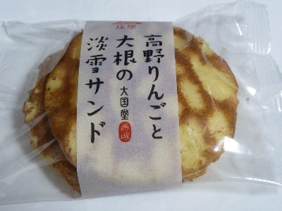

大国堂の高野りんごと大根の淡雪サンド
2016/10/30
道の駅たかので買いました。

高野名産の林檎と大根を同時に食べれる画期的な商品です。
お土産にピッタリ！です。
でも高野でお土産ってあんまりないかも？
食べた感想ですが、淡雪サンドの味はわかりましたが、りんごと大根の味はよくわかりませんでした。
大根の味がよくわかったら美味しくないかもしれないので、これはこれでいいのかな。
広島県庄原市西城町西城103
2016/10/30
道の駅たかので買いました。

高野名産の林檎と大根を同時に食べれる画期的な商品です。
お土産にピッタリ！です。
でも高野でお土産ってあんまりないかも？
食べた感想ですが、淡雪サンドの味はわかりましたが、りんごと大根の味はよくわかりませんでした。
大根の味がよくわかったら美味しくないかもしれないので、これはこれでいいのかな。